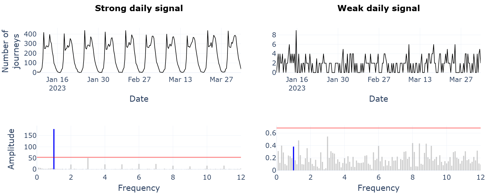
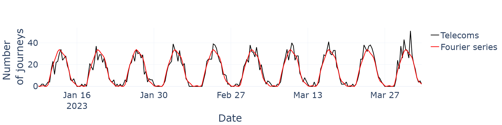
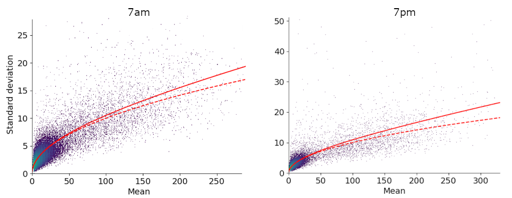

Fourier series model#
In the mobile telecoms data, the number of hourly journeys varies hugely depending on the start and end MSOA. For rural MSOAs, where only a handful of journeys occur between them each month, a Fourier series model is not appropriate and a radiation model is adopted instead. The Fourier series model is therefore only applied when the time series of journey numbers exhibits a strong daily pattern. In this section we outline what constitutes a strong daily pattern, how the frequencies, amplitude and phases of the Fourier series are selected, and how variability in journey numbers across consecutive weeks is used to construct a probabilistic model.
When to use a Fourier series model
To determine whether a Fourier series model is appropriate for a specific pairs of MSOAs, recall that the Fourier transform can be used to decompose a time series into its constituent frequencies. The amplitude associated with each frequency specifies how much it contributes to the overall signal, with larger amplitudes indicating that the frequency has a stronger presence. Here, the idea is to define a threshold and only model pairs of MSOAs using a Fourier series if the amplitude of the daily frequency exceeds this threshold. To choose the threshold for a given pair, we repeatedly shuffle the time series of journey numbers, each time evaluating the Fourier transform and recording the largest amplitude. The threshold is then set as the 99th percentile of these amplitudes and represents the largest amplitude we can reasonably expect to see from a series with the same first-order statistics but without the periodicity6. When applying this technique across all pairs, only 1.5% have a strong enough daily pattern to be modelled as a Fourier series, but these pairs account for 89% of total journey numbers.
The following plot shows the time series of journey numbers for two different MSOA pairs along with the corresponding periodograms. The threshold (red) and amplitude of the daily frequency (blue) are highlighted in each case.
{kind=link}
Choosing the number of terms
Once a Fourier series model has been deemed appropriate for a particular pair of MSOAs, the next step is to determine the number of terms to include. If \(A_k\) and \(\phi_k\) denote the respective amplitude and phase of frequency \(f_k\), then the original time series of journey numbers can be reconstructed as the Fourier series:
where \(A_0\) is the DC term, or the mean of the series7. Including all of the frequencies in the above sum reconstructs the time series exactly but results in a model that overfits to the noise in the series. On the other hand, including too few frequencies produces a model that might fail to capture key features present in the data. To choose an appropriate number of terms, a 5-fold cross-validation procedure is implemented. The time series for each MSOA pair is first partitioned into 5 validation folds, each containing a unique set of weeks. For each fold, the Fourier transform is then applied to the median hourly counts of the remaining weeks, and the frequencies are ranked by importance. A consensus ranking is generated by aggregating the rankings across all folds. Predictions are then made using an increasing number of terms, and the root mean square error (RMSE) is computed between the predictions and the corresponding validation folds. Finally, the optimal number of terms is selected by minimising the average RMSE across all folds.
Note
By using the median hourly values, the frequencies are restricted to daily harmonics, that is, frequencies that complete an integer number of cycles each day. This not only limits the maximum number of parameters, since each frequency has a corresponding amplitude and phase, but also avoids low frequencies. At lower frequencies, cycles span multiple weeks and align more closely with seasonal trends, which are difficult to reliably identify from the three-month period we have data for.
A comparison between the Fourier series approximation and original time series is provided below for a single MSOA pair.
{kind=link}
Probabilistic model
Whilst the Fourier series can be thought of as an estimate of the average number of hourly journeys, an understanding of the variability across weeks is also needed in order to sample realizations. For most pairs modelled by a Fourier series, the standard deviation across the three-month period can be approximated in terms of the mean, \(\mu_h\), using
where \(k_h\) is estimated by minimising the squared error between this expression and the observed standard deviation. This particular relationship holds for random variables that follow a negative-binomial distribution, with \(k_h\) referred to as the dispersion parameter. As a result, if \(f(h)\) is the Fourier series prediction for hour \(h\), realizations of journey numbers can be obtained by sampling from a negative-binomial distribution with mean \(f(h)\) and variance \(k_h f(h)^2 + f(h)\). For the majority of pairs, no autocorrelation is present in the residuals of the Fourier series model at a 1% significance level, indicating that it is suitable to sample from independent negative-binomial distributions for each hour.
The following plots shows the observed mean and standard deviation at two hours for pairs modelled by a Fourier series. The solid red line corresponds to the fitted curve from (1), whilst the dashed red line represents the special case where \(k_h=0\) and the negative-binomial distribution reduces to a Poisson distribution.
{kind=link}